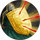

Блок Щитом
Открыть в интерактивной вики →
Описание
Щит - это не забор, за которым можно просто спрятаться. Рыцарь прекрасно знает, как укрыться за ним так, чтобы ближние и дальние атаки наносили значительно меньший урон. За это ему приходится платить своей точностью, если он в своей лучшей форме - только под воздействием адреналина, вызванного даже легкими ранениями, он восстанавливает точность движений. Кроме того, каждый успешный блок в данном раунде на 3% слабее предыдущего, а защита товарища ослабляет его еще на 3%.
Тип: защита
Сложность: низкая
выбран щит
Тип: защита
Сложность: низкая
выбран щит
Уровни навыка
| Уровень навыка | Требуемый уровень | Выносливость | Ближняя атака | Дальняя атака | Количество Блоков | Эффективность Блока | Раунды |
|---|---|---|---|---|---|---|---|
| I | 14 | 18 | -9%, когда здоров | -9%, когда здоров | +2 | 27% | 1 |
| II | 15 | 20 | -10%, когда здоров | -10%, когда здоров | +2 | 30% | 1 |
| III | 16 | 22 | -11%, когда здоров | -11%, когда здоров | +2 | 33% | 1 |
| IV | 17 | 23 | -12%, когда здоров | -12%, когда здоров | +3 | 36% | 1 |
| V | 18 | 25 | -13%, когда здоров | -13%, когда здоров | +3 | 39% | 1 |
| VI | 19 | 27 | -14%, когда здоров | -14%, когда здоров | +3 | 42% | 1 |
| VII | 20 | 29 | -15%, когда здоров | -15%, когда здоров | +3 | 45% | 1 |
| I | 21 | 32 | -16%, когда здоров | -16%, когда здоров | +3 | 48% | 1 |
| II | 22 | 34 | -17%, когда здоров | -17%, когда здоров | +4 | 51% | 1 |
| III | 23 | 37 | -18%, когда здоров | -18%, когда здоров | +4 | 54% | 1 |
| IV | 24 | 40 | -19%, когда здоров | -19%, когда здоров | +4 | 57% | 1 |
| V | 25 | 42 | -20%, когда здоров | -20%, когда здоров | +4 | 60% | 1 |
| VI | 26 | 45 | -21%, когда здоров | -21%, когда здоров | +4 | 63% | 1 |
| VII | 27 | 48 | -22%, когда здоров | -22%, когда здоров | +5 | 66% | 1 |
| I | 28 | 51 | -23%, когда здоров | -23%, когда здоров | +5 | 69% | 1 |
| II | 29 | 55 | -24%, когда здоров | -24%, когда здоров | +5 | 72% | 1 |
| III | 30 | 59 | -25%, когда здоров | -25%, когда здоров | +5 | 75% | 1 |
| IV | 31 | 62 | -26%, когда здоров | -26%, когда здоров | +5 | 78% | 1 |
| V | 32 | 66 | -27%, когда здоров | -27%, когда здоров | +6 | 81% | 1 |
| VI | 33 | 69 | -28%, когда здоров | -28%, когда здоров | +6 | 84% | 1 |
| VII | 34 | 73 | -29%, когда здоров | -29%, когда здоров | +6 | 87% | 1 |